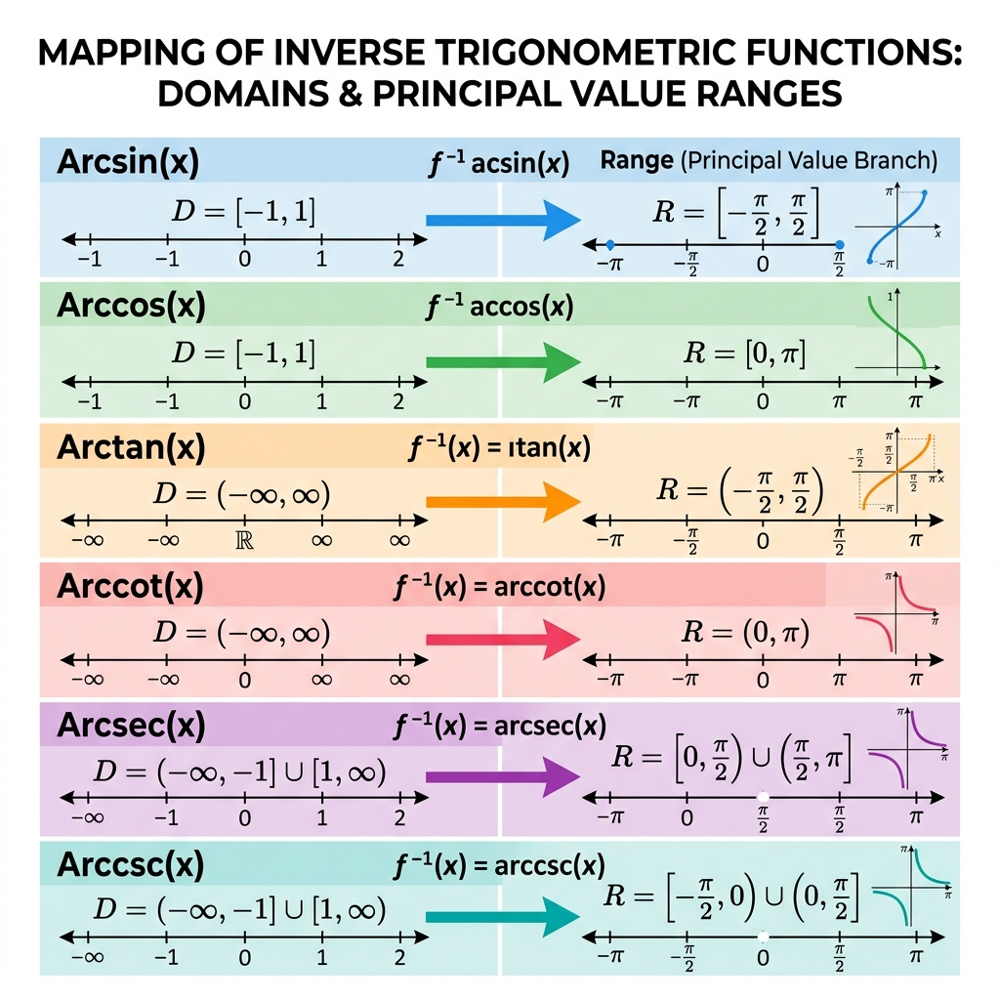
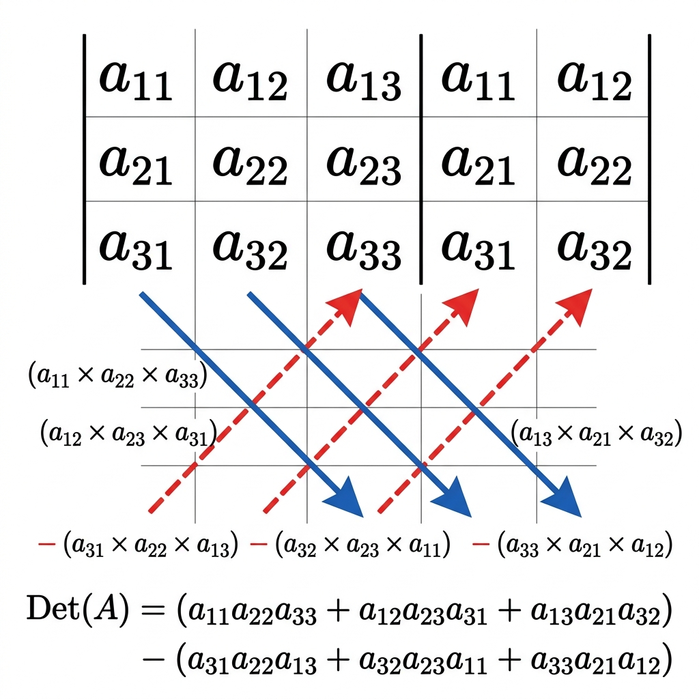
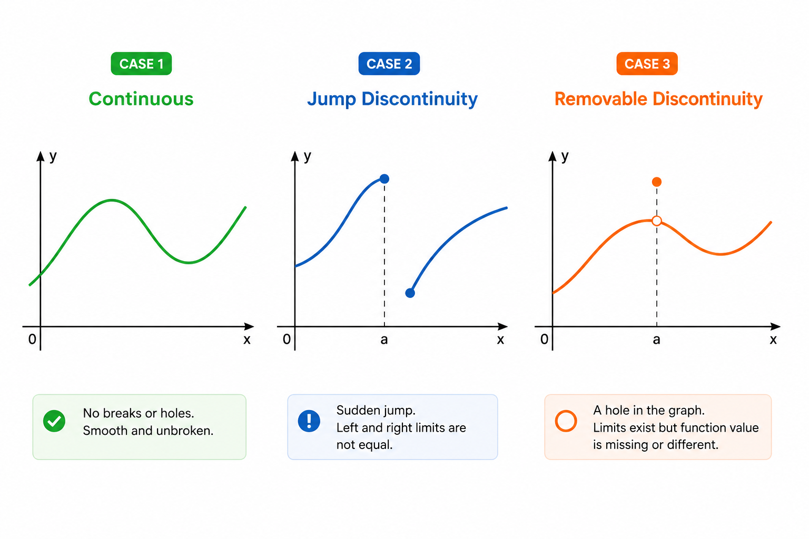

Strictly aligned to NCERT Rationalised Curriculum & CBSE 2025-26 Official Guidelines.
01
Relations and Functions
Chapter 1 • NCERT Rationalised
Unit I: Relations & Functions • 08 Marks Total
1. Types of Relations on a Set \( A \)
Let \( A \) be a non-empty set. Any subset \( R \subseteq A \times A \) is a binary relation on \( A \).
Standard Definitions:
Empty Relation (\( \phi \)): \( R = \phi \subseteq A \times A \). No element of \( A \) is related to any element of \( A \).
Universal Relation: \( R = A \times A \). Each element of \( A \) is related to every element of \( A \). (Empty & Universal are called trivial relations).
Identity Relation (\( I_A \)): \( I_A = \{(a, a) : \forall\, a \in A\} \). Every element is related to itself and only itself.
Reflexive Relation: \( (a, a) \in R \) for every \( a \in A \). (Every identity relation is reflexive, but a reflexive relation may contain extra pairs like \( (a, b) \)).
Symmetric Relation: If \( (a, b) \in R \implies (b, a) \in R \) for all \( a, b \in A \).
Transitive Relation: If \( (a, b) \in R \) and \( (b, c) \in R \implies (a, c) \in R \) for all \( a, b, c \in A \).
Equivalence Relation & Equivalence Classes:
A relation \( R \) on a set \( A \) is an Equivalence Relation if and only if it is simultaneously Reflexive, Symmetric, and Transitive.
Equivalence Class of an element \( a \in A \):
\[ [a] = \{x \in A : (x, a) \in R\} \]
Key Properties of Equivalence Classes:
\( a \in [a] \) for all \( a \in A \).
Two equivalence classes are either completely disjoint or identical: \( [a] \cap [b] = \phi \) or \( [a] = [b] \).
The union of all disjoint equivalence classes partitions the entire set: \( \bigcup [a] = A \).
Partitioning of Set A into Disjoint Equivalence Classes
Combinatorial Count Formulas (When \( n(A) = n \)):
Category
Formula
Example for \( n = 3 \)
Total possible relations on \( A \)
\( 2^{n^2} \)
\( 2^9 = 512 \)
Number of Reflexive relations
\( 2^{n(n-1)} = 2^{n^2 - n} \)
\( 2^{3(2)} = 2^6 = 64 \)
Number of Symmetric relations
\( 2^{\frac{n(n+1)}{2}} \)
\( 2^{\frac{3(4)}{2}} = 2^6 = 64 \)
Number of Reflexive & Symmetric relations
\( 2^{\frac{n(n-1)}{2}} \)
\( 2^{\frac{3(2)}{2}} = 2^3 = 8 \)
Standard Board Proof: Divisibility Equivalence
Theorem: Let \( m \in \mathbb{N} \). Prove that the relation \( R = \{(a, b) : a - b \text{ is divisible by } m\} \) on \( \mathbb{Z} \) is an equivalence relation.
Step 1: Reflexivity: For any \( a \in \mathbb{Z} \), \( a - a = 0 = 0 \times m \), which is a multiple of \( m \). Hence, \( (a, a) \in R \) for all \( a \in \mathbb{Z} \).
Step 2: Symmetry: Let \( (a, b) \in R \implies a - b = km \) for some \( k \in \mathbb{Z} \).
Then \( b - a = -(a - b) = -km = (-k)m \). Since \( -k \in \mathbb{Z} \), \( b - a \) is divisible by \( m \implies (b, a) \in R \).
Step 3: Transitivity: Let \( (a, b) \in R \) and \( (b, c) \in R \). Then \( a - b = k_1 m \) and \( b - c = k_2 m \) for \( k_1, k_2 \in \mathbb{Z} \).
Adding both: \( (a - b) + (b - c) = a - c = (k_1 + k_2)m \). Since \( k_1 + k_2 \in \mathbb{Z} \), \( a - c \) is divisible by \( m \implies (a, c) \in R \).
Since \( R \) is reflexive, symmetric, and transitive, it is an equivalence relation.
2. Types of Functions
Mapping Architecture: Injective (One-One), Surjective (Onto), and Bijective Mappings
Type
Mathematical Test Condition
Graphical Test
Number of Functions (\( |A|=m, |B|=n \))
One-One (Injective)
\( f(x_1) = f(x_2) \implies x_1 = x_2 \)
Any horizontal line cuts the graph at at most one point.
\( {}^n P_m = \frac{n!}{(n-m)!} \) (if \( n \ge m \)); \( 0 \) (if \( n < m \))
Many-One
\( \exists\, x_1 \ne x_2 \) such that \( f(x_1) = f(x_2) \)
A horizontal line cuts the graph at more than one point.
\( n^m - ({}^n P_m) \) (for \( n \ge m \))
Onto (Surjective)
Range \( = \) Codomain (For every \( y \in B \), \( \exists\, x \in A \) with \( f(x) = y \))
Every horizontal line through codomain cuts the curve at at least one point.
\( \sum_{r=0}^{n} (-1)^{n-r} \, {}^nC_r \, r^m \); (if \( m = n \implies n! \); if \( m < n \implies 0 \))
Bijective
Both Injective & Surjective
Every horizontal line cuts graph at exactly one point.
\( n! \) (if \( m = n \)); \( 0 \) (if \( m \ne n \))
Working Rule: Proving Injectivity & Surjectivity
To prove One-One: Assume \( f(x_1) = f(x_2) \). Simplify algebraically using factoring, conjugate multiplication, or cross-multiplication. Conclude \( x_1 = x_2 \). If \( x_1 = \pm x_2 \), verify if negative domain values are allowed!
To prove Onto: Let \( y \in \text{Codomain} \). Set \( y = f(x) \). Solve for \( x \) strictly in terms of \( y \) (i.e. \( x = g(y) \)). Check if \( g(y) \in \text{Domain} \) for all \( y \in \text{Codomain} \). Finally substitute \( g(y) \) into \( f \) to show \( f(g(y)) = y \).
Top Board Exam Traps & PYQ Pitfalls
Domain Trap: \( f(x) = x^2 \) is Bijective on \( f: [0, \infty) \to [0, \infty) \), but Neither one-one nor onto on \( f: \mathbb{R} \to \mathbb{R} \)! Always inspect the domain and codomain sets first.
Strict Inequality Relation: \( R = \{(a, b) : a \le b^2\} \) or \( a \le b^3 \) on \( \mathbb{R} \) is NOT reflexive (counterexample: \( a = \frac{1}{2} \le \left(\frac{1}{2}\right)^2 = \frac{1}{4} \) is false) and NOT transitive!
02
Inverse Trigonometric Functions
Chapter 2 • NCERT Rationalised
Unit I: Relations & Functions • 08 Marks Total

Principal Value Branches & Quadrant Ranges for All 6 Inverse Trigonometric Functions
1. Master Principal Value Branches (Mandatory Memorisation)
Cosine Range Trap: \( \cos^{-1}\left(\cos\frac{7\pi}{6}\right) \ne \frac{7\pi}{6} \). Since \( \frac{7\pi}{6} \notin [0, \pi] \), rewrite as \( \cos^{-1}\left(\cos\left(2\pi - \frac{5\pi}{6}\right)\right) = \cos^{-1}\left(\cos\frac{5\pi}{6}\right) = \frac{5\pi}{6} \).
03
Matrices
Chapter 3 • NCERT Rationalised
Unit II: Algebra • 10 Marks Total
1. Fundamentals & Special Matrix Types
A matrix of order \( m \times n \) has \( m \) rows and \( n \) columns: \( A = [a_{ij}]_{m \times n} \).
Classification of Matrices:
Row Matrix: \( 1 \times n \) matrix (single row).
Column Matrix: \( m \times 1 \) matrix (single column).
Square Matrix: \( m = n \) (number of rows equals columns).
Diagonal Matrix: A square matrix where all non-diagonal elements are zero: \( a_{ij} = 0 \) for \( i \ne j \).
Scalar Matrix: A diagonal matrix whose all diagonal entries are equal: \( a_{ii} = k \) and \( a_{ij} = 0 \) for \( i \ne j \).
Identity Matrix (\( I \)): A scalar matrix where diagonal entries are 1: \( a_{ii} = 1 \) and \( a_{ij} = 0 \) for \( i \ne j \).
Zero/Null Matrix (\( O \)): All entries are zero.
2. Operations & Matrix Multiplication Properties
Multiplication Compatibility: Product \( AB \) is defined if and only if: Number of columns in \( A \) \( = \) Number of rows in \( B \).
If \( A \) is \( m \times p \) and \( B \) is \( p \times n \), then \( AB \) is of order \( m \times n \).
Dimension Compatibility: Inner indices must be equal, outer indices dictate product dimensions
Fundamental Properties:
Non-Commutative: In general, \( AB \ne BA \). Even if both exist, their orders or contents usually differ.
Associative: \( A(BC) = (AB)C \) (whenever products are defined).
Distributive: \( A(B + C) = AB + AC \) and \( (A + B)C = AC + BC \).
Multiplicative Identity: For square matrix \( A \), \( AI = IA = A \).
Existence of Non-Zero Matrices with Zero Product (Order 2):
In real numbers, \( ab = 0 \implies a = 0 \text{ or } b = 0 \). However, for matrices, \( AB = O \) does not imply \( A = O \) or \( B = O \). Standard Example: Let \( A = \begin{bmatrix} 0 & -1 \\ 0 & 2 \end{bmatrix} \ne O \) and \( B = \begin{bmatrix} 3 & 5 \\ 0 & 0 \end{bmatrix} \ne O \). Then:
\[ AB = \begin{bmatrix} 0 & -1 \\ 0 & 2 \end{bmatrix} \begin{bmatrix} 3 & 5 \\ 0 & 0 \end{bmatrix} = \begin{bmatrix} 0(3) + (-1)(0) & 0(5) + (-1)(0) \\ 0(3) + 2(0) & 0(5) + 2(0) \end{bmatrix} = \begin{bmatrix} 0 & 0 \\ 0 & 0 \end{bmatrix} = O \]
3. Transpose, Symmetric & Skew-Symmetric Matrices
Transpose Properties:
\[ (A')' = A, \quad (A \pm B)' = A' \pm B', \quad (kA)' = kA', \quad (AB)' = B'A' \text{ (Reversal Law)} \]
Symmetric Matrix:
\( A' = A \) (i.e. \( a_{ij} = a_{ji} \))
If \( A \) is any square matrix, \( A + A' \) is always symmetric.
Skew-Symmetric Matrix:
\( A' = -A \) (i.e. \( a_{ij} = -a_{ji} \))
All diagonal entries are strictly zero: \( a_{ii} = -a_{ii} \implies 2a_{ii} = 0 \implies a_{ii} = 0 \).
Theorem: Any square matrix \( A \) can be uniquely expressed as the sum of a symmetric and a skew-symmetric matrix.
\[ A = \frac{1}{2}(A + A') + \frac{1}{2}(A - A') = P + Q \]
• Let \( P = \frac{1}{2}(A + A') \). Then \( P' = \left(\frac{1}{2}(A + A')\right)' = \frac{1}{2}(A' + (A')') = \frac{1}{2}(A' + A) = P \implies P \) is symmetric.
• Let \( Q = \frac{1}{2}(A - A') \). Then \( Q' = \left(\frac{1}{2}(A - A')\right)' = \frac{1}{2}(A' - A) = -\frac{1}{2}(A - A') = -Q \implies Q \) is skew-symmetric.
Hence, \( A = P + Q \). Uniqueness can be verified by showing any other decomposition \( A = R + S \) yields \( R = P \) and \( S = Q \).
Official CBSE Derivation: Uniqueness of Matrix Inverse
Theorem (Uniqueness of Inverse): Inverse of a square matrix, if it exists, is unique.
Let \( A \) be an invertible square matrix of order \( n \times n \). If possible, let \( B \) and \( C \) be two distinct inverses of \( A \).
• Since \( B \) is an inverse of \( A \), by definition of invertible matrices:
\[ AB = BA = I \]
• Since \( C \) is also an inverse of \( A \), by definition:
\[ AC = CA = I \]
Now, consider matrix \( B \). Using identity property and associative law of matrix multiplication:
\[ B = BI = B(AC) = (BA)C = IC = C \]
Hence, \( B = C \). This proves that the inverse of an invertible matrix, if it exists, is strictly unique.
04
Determinants
Chapter 4 • NCERT Rationalised
Unit II: Algebra • 10 Marks Total
1. Minors, Cofactors & Expansion
Minor (\( M_{ij} \)): Determinant of the submatrix obtained by deleting the \( i \)-th row and \( j \)-th column.
Expansion Theorem: The determinant is the sum of products of elements of any row (or column) with their corresponding cofactors:
\[ |A| = a_{i1}A_{i1} + a_{i2}A_{i2} + a_{i3}A_{i3} \]
Orthogonality / Zero-Sum Theorem: If elements of a row (or column) are multiplied with cofactors of any other row (or column), their sum is strictly zero:
\[ a_{11}A_{21} + a_{12}A_{22} + a_{13}A_{23} = 0 \]

Sarrus Rule: Diagonal Scheme for Rapid 3×3 Determinant Evaluation
2. The 8 Golden Theorems of Adjoint & Determinants
Let \( A \) and \( B \) be non-singular square matrices of order \( n \times n \):
1. Fundamental Identity:\( A(\text{adj } A) = (\text{adj } A)A = |A|I_n \)
2. Determinant of Adjoint:\( |\text{adj } A| = |A|^{n-1} \)
\( f(x) \) is differentiable at \( x = c \) if and only if \( L f'(c) = R f'(c) = \text{finite real number} \).
Core Theorem: Every differentiable function is continuous, but the converse is NOT true. Classic Example: \( f(x) = |x| \) is continuous at \( x = 0 \), but NOT differentiable at \( x = 0 \) because \( L f'(0) = -1 \) while \( R f'(0) = +1 \).

Graphical Anatomy of Removable vs Jump vs Essential Discontinuities
2. Master Derivatives Table (All Standard Functions)
Volume \( V = \frac{1}{3}\pi r^2 h \) Semi-vertical angle \( \alpha \implies r = h\tan\alpha \)
If \( \alpha \) is constant: \( V = \frac{1}{3}\pi (\tan^2\alpha) h^3 \) \( \frac{dV}{dt} = \pi (\tan^2\alpha) h^2 \frac{dh}{dt} \)
Marginal Cost (MC):
Instantaneous rate of change of total cost \( C(x) \) with respect to number of units \( x \) produced:
\[ MC = \frac{d}{dx}[C(x)] \]
Marginal Revenue (MR):
Instantaneous rate of change of total revenue \( R(x) \) with respect to number of units \( x \) sold:
\[ MR = \frac{d}{dx}[R(x)] \]
3. Increasing & Decreasing Functions
Tangent Slope Behavior & Signs of f'(x) in Monotonic Intervals
Let \( f \) be continuous on \( [a, b] \) and differentiable on open interval \( (a, b) \):
Strictly Increasing on \( (a, b) \)\( f'(x) > 0 \) for all \( x \in (a, b) \) \( x_1 < x_2 \implies f(x_1) < f(x_2) \)
Increasing on \( [a, b] \)\( f'(x) \ge 0 \) for all \( x \in (a, b) \) \( x_1 < x_2 \implies f(x_1) \le f(x_2) \)
Strictly Decreasing on \( (a, b) \)\( f'(x) < 0 \) for all \( x \in (a, b) \) \( x_1 < x_2 \implies f(x_1) > f(x_2) \)
Decreasing on \( [a, b] \)\( f'(x) \le 0 \) for all \( x \in (a, b) \) \( x_1 < x_2 \implies f(x_1) \ge f(x_2) \)
Non-Monotonicity: If \( f'(x) \) assumes both positive and negative values in an interval \( (a, b) \), then \( f \) is neither increasing nor decreasing on \( (a, b) \). (e.g. \( f(x) = \sin x \) on \( [0, \pi] \)).
Working Algorithm: Determining Intervals of Increase / Decrease
Calculate first derivative \( f'(x) \).
Solve \( f'(x) = 0 \) to determine the critical points \( x_1 < x_2 < \dots < x_k \).
These critical points partition the domain into disjoint subintervals: \( (-\infty, x_1), (x_1, x_2), \dots, (x_k, \infty) \).
Pick a test value inside each subinterval to test the algebraic sign of \( f'(x) \):
If \( f'(x) > 0 \) throughout the subinterval \( \implies \) Strictly Increasing.
If \( f'(x) < 0 \) throughout the subinterval \( \implies \) Strictly Decreasing.
4. Maxima, Minima & Optimization
Critical Point: A point \( c \) in the domain of \( f \) where either \( f'(c) = 0 \) or \( f'(c) \) does not exist.
First Derivative Test:
Local Maximum: \( f'(x) \) changes sign from positive to negative as \( x \) increases through \( c \).
Local Minimum: \( f'(x) \) changes sign from negative to positive as \( x \) increases through \( c \).
Point of Inflection: \( f'(x) \) does not change sign as \( x \) increases through \( c \) (e.g. \( f(x) = x^3 \) at \( x=0 \)).
Second Derivative Test:
Let \( f'(c) = 0 \):
If \( f''(c) < 0 \implies x = c \) is a point of Local Maximum, and \( f(c) \) is the local maximum value.
If \( f''(c) > 0 \implies x = c \) is a point of Local Minimum, and \( f(c) \) is the local minimum value.
If \( f''(c) = 0 \implies \) Test fails; resort immediately to the First Derivative Test.
Absolute (Global) Extrema on Closed Interval \( [a, b] \):
Find all critical points \( c_1, c_2, \dots \in (a, b) \) where \( f'(c_i) = 0 \) or \( f' \) is not defined.
Compute function values at endpoints and all critical points: \( \{ f(a), f(b), f(c_1), f(c_2), \dots \} \).
Absolute Maximum Value \( = \max \{ f(a), f(b), f(c_i) \} \).
Classic 5-Mark Board Proof: Inscribed Cylinder of Max Volume
Theorem: Show that the right circular cylinder of maximum volume that can be inscribed in a sphere of fixed radius \( R \) has height \( h = \frac{2R}{\sqrt{3}} \), and maximum volume \( V_{\max} = \frac{4\pi R^3}{3\sqrt{3}} \).
Cylinder Inscribed in Sphere of Radius R
Step 1: Setup Geometric Variables:
Let \( r \) be radius and \( h \) be height of cylinder. In right-triangle section through sphere center:
\[ r^2 + \left(\frac{h}{2}\right)^2 = R^2 \implies r^2 = R^2 - \frac{h^2}{4} \]
Step 2: Express Volume as Single-Variable Function:
\[ V = \pi r^2 h = \pi \left(R^2 - \frac{h^2}{4}\right) h = \pi \left(R^2 h - \frac{h^3}{4}\right) \]
Approximations using Differentials (\( \Delta y \approx f'(x)\Delta x \)) — DELETED.
Do NOT waste time practicing tangent slopes or approximation decimals; board papers will strictly focus on Rates of Change, Monotonic Intervals, and Applied Maxima/Minima (Case Studies & 5-markers).
07
Integrals
Chapter 7 • NCERT Rationalised
Unit III: Calculus • 35 Marks Total
1. Master Table of Standard Indefinite Integrals
Integrand \( f(x) \)
Integral \( \int f(x) dx \)
Integrand \( f(x) \)
Integral \( \int f(x) dx \)
\( x^n \quad (n \ne -1) \)
\( \frac{x^{n+1}}{n+1} + C \)
\( \frac{1}{x} \)
\( \ln|x| + C \)
\( e^x \)
\( e^x + C \)
\( a^x \)
\( \frac{a^x}{\ln a} + C \)
\( \sin x \)
\( -\cos x + C \)
\( \cos x \)
\( \sin x + C \)
\( \sec^2 x \)
\( \tan x + C \)
\( \csc^2 x \)
\( -\cot x + C \)
\( \sec x \tan x \)
\( \sec x + C \)
\( \csc x \cot x \)
\( -\csc x + C \)
\( \tan x \)
\( \ln|\sec x| + C = -\ln|\cos x| + C \)
\( \cot x \)
\( \ln|\sin x| + C \)
\( \sec x \)
\( \ln|\sec x + \tan x| + C = \ln\left|\tan\left(\frac{x}{2} + \frac{\pi}{4}\right)\right| + C \)
\( \csc x \)
\( \ln|\csc x - \cot x| + C = \ln\left|\tan\frac{x}{2}\right| + C \)
Linear over Quadratic Technique: For \( \int \frac{px + q}{ax^2 + bx + c} dx \) or \( \int \frac{px + q}{\sqrt{ax^2 + bx + c}} dx \):
\[ px + q = A \frac{d}{dx}(ax^2 + bx + c) + B = A(2ax + b) + B \]
Equate coefficients of \( x \) and constant terms to find constants \( A \) and \( B \), splitting into derivative substitution and completing the square.
Integration by Parts (ILATE Rule):
\[ \int u \cdot v \, dx = u \int v \, dx - \int \left( \frac{du}{dx} \int v \, dx \right) dx \]
Choose first function \( u \) in order of priority: I (Inverse Trig) \( \to \) L (Logarithmic) \( \to \) A (Algebraic) \( \to \) T (Trigonometric) \( \to \) E (Exponential).
⚡ The Golden Exponential Property:
\[ \int e^x \left[ f(x) + f'(x) \right] dx = e^x f(x) + C \]
4. Fundamental Theorem of Calculus & Definite Integrals
Fundamental Theorem of Calculus (FTC):
First Fundamental Theorem of Calculus (Area Function):
Let \( f \) be a continuous function on the closed interval \( [a, b] \) and let \( A(x) \) be the area function defined by:
\[ A(x) = \int_a^x f(t) \, dt \quad \text{for all } x \in [a, b] \]
Then \( A(x) \) is differentiable on \( [a, b] \) and its derivative is:
\[ A'(x) = \frac{d}{dx}\left[ \int_a^x f(t) \, dt \right] = f(x) \quad \text{for all } x \in [a, b] \]
Second Fundamental Theorem of Calculus (Evaluation Tool):
Let \( f \) be a continuous function defined on \( [a, b] \) and \( F \) be an anti-derivative (integral) of \( f \), such that \( F'(x) = f(x) \). Then:
Area bounded by the curve \( x = g(y) \), \( y \)-axis, and abscissae \( y = c \) to \( y = d \):
\[ \text{Area} = \int_c^d |x| \, dy = \int_c^d |g(y)| \, dy \]
Quadrature Principles: Slicing with Vertical Strip (dx) vs Horizontal Strip (dy)
Regions Crossing Axes: If a portion of the curve lies below the \( x \)-axis where \( f(x) < 0 \), area cannot be negative! Split the integral at the zero-crossing \( c \):
\[ \text{Total Area} = \int_a^c f(x) \, dx + \left| \int_c^b f(x) \, dx \right| \]
Rough Sketch: Draw a neat labeled coordinate sketch showing the curve, axes, bounding lines, and points of intersection.
Inspect Symmetry:
If equation contains only even powers of \( y \) (e.g. \( y^2 = 4ax \)) \( \implies \) symmetric about \( x \)-axis. Multiply upper-half integral by 2.
If equation contains only even powers of both \( x \) and \( y \) (e.g. circle, ellipse) \( \implies \) multiply first-quadrant integral by 4.
Determine Strip & Limits: Choose vertical strip \( dx \) with limits from \( x = a \) to \( x = b \), or horizontal strip \( dy \) with limits from \( y = c \) to \( y = d \).
Area bounded between two intersecting curves (e.g. circle and parabola \( x^2 + y^2 = 4 \) with \( y^2 = 3x \), or between two parabolas \( y^2 = 4ax \) and \( x^2 = 4ay \)) has been DELETED from the syllabus.
Current exam scope is strictly limited to simple curves (single curve bounded by axes and straight lines, or standard conic area derivations).
09
Differential Equations
Chapter 9 • NCERT Rationalised
Unit III: Calculus • 35 Marks Total
1. Order, Degree & Nature of Solutions
Order: The order of the highest-order derivative occurring in the differential equation.
Degree: The power (positive integer exponent) of the highest-order derivative, provided the differential equation is a polynomial equation in derivatives.
General Solution: A solution containing as many arbitrary constants as the order of the differential equation.
Particular Solution: A solution obtained from the general solution by giving specific values to arbitrary constants via initial/boundary conditions. It contains zero arbitrary constants.
Crucial 1-Mark MCQ Trap: Degree Not Defined
If derivatives appear inside trigonometric, logarithmic, or exponential functions, the equation is NOT a polynomial in derivatives:
\( \frac{d^2y}{dx^2} + \sin\left(\frac{dy}{dx}\right) = 0 \implies \text{Order} = 2, \quad \textbf{Degree is NOT DEFINED} \).
\( \left(\frac{dy}{dx}\right)^2 + e^{dy/dx} = 3 \implies \text{Order} = 1, \quad \textbf{Degree is NOT DEFINED} \).
Note: Order is ALWAYS defined for every differential equation. Degree can be undefined.
\[ \int f(x) dx = \int g(y) dy + C \]
Reducible Form: For \( \frac{dy}{dx} = f(ax + by + c) \), substitute \( u = ax + by + c \implies \frac{du}{dx} = a + b\frac{dy}{dx} \).
Method 2: Homogeneous Differential Equations
A function \( F(x, y) \) is homogeneous of degree 0 if \( F(\lambda x, \lambda y) = \lambda^0 F(x, y) \).
If \( \frac{dy}{dx} = f\left(\frac{y}{x}\right) \implies \) Substitute \( y = vx \implies \frac{dy}{dx} = v + x \frac{dv}{dx} \).
If \( \frac{dx}{dy} = g\left(\frac{x}{y}\right) \implies \) Substitute \( x = vy \implies \frac{dx}{dy} = v + y \frac{dv}{dy} \).
Separates variables into \( v \) and \( x \) (or \( y \)). Integrate and replace \( v = \frac{y}{x} \) (or \( \frac{x}{y} \)).
Method 3: First-Order Linear Differential Equations (LDE)
Type A (Standard):
\[ \frac{dy}{dx} + P(x) y = Q(x) \]
Direction Angles & Cosines: If \( \vec{r} \) makes angles \( \alpha, \beta, \gamma \) with positive \( x, y, z \) axes:
\[ l = \cos\alpha = \frac{x}{|\vec{r}|}, \quad m = \cos\beta = \frac{y}{|\vec{r}|}, \quad n = \cos\gamma = \frac{z}{|\vec{r}|} \]
Vector Projection of \( \vec{a} \) on \( \vec{b} \)\( \left(\frac{\vec{a} \cdot \vec{b}}{|\vec{b}|^2}\right)\vec{b} \)
Geometric Foundations: Scalar Projection vs Normal Vector and Parallelogram Area
Repeated Board Proof: Unit Vectors Sum to Zero
Theorem: If \( \vec{a}, \vec{b}, \vec{c} \) are unit vectors such that \( \vec{a} + \vec{b} + \vec{c} = \vec{0} \), find the value of \( \vec{a}\cdot\vec{b} + \vec{b}\cdot\vec{c} + \vec{c}\cdot\vec{a} \).
Since \( |\vec{a}| = |\vec{b}| = |\vec{c}| = 1 \):
Area of Triangle (Sides \( \vec{a}, \vec{b} \))\( \text{Area} = \frac{1}{2}|\vec{a} \times \vec{b}| \)
Area of Parallelogram (Adjacent Sides)\( \text{Area} = |\vec{a} \times \vec{b}| \)
Area of Parallelogram (Diagonals \( \vec{d}_1, \vec{d}_2 \))\( \text{Area} = \frac{1}{2}|\vec{d}_1 \times \vec{d}_2| \)
Triangle with Position Vectors \( \vec{a}, \vec{b}, \vec{c} \)\( \Delta = \frac{1}{2}|\vec{a}\times\vec{b} + \vec{b}\times\vec{c} + \vec{c}\times\vec{a}| \)
Crucial Parallelogram Area Trap: Sides vs Diagonals
Never confuse adjacent sides with diagonals in vector questions:
If \( \vec{a} \) and \( \vec{b} \) represent adjacent sides of a parallelogram: \( \text{Area} = |\vec{a} \times \vec{b}| \).
If \( \vec{d}_1 \) and \( \vec{d}_2 \) represent diagonals of a parallelogram: \( \text{Area} = \mathbf{\frac{1}{2}}|\vec{d}_1 \times \vec{d}_2| \). (Missing the factor of \( \frac{1}{2} \) loses 50% marks).
11
Three Dimensional Geometry
Chapter 11 • NCERT Rationalised (Straight Lines in Space)
Unit IV: Vectors & 3D • 14 Marks Total
1. Direction Cosines & Direction Ratios of a Line
Direction Cosines (\( l, m, n \)): If a directed line makes angles \( \alpha, \beta, \gamma \) with positive \( x, y, z \) axes:
\[ l = \cos\alpha, \quad m = \cos\beta, \quad n = \cos\gamma \quad \implies \quad l^2 + m^2 + n^2 = 1 \]
Line Joining Two Points \( P(x_1, y_1, z_1) \) and \( Q(x_2, y_2, z_2) \):
\[ PQ = \sqrt{(x_2 - x_1)^2 + (y_2 - y_1)^2 + (z_2 - z_1)^2} \]
\[ l = \frac{x_2 - x_1}{PQ}, \quad m = \frac{y_2 - y_1}{PQ}, \quad n = \frac{z_2 - z_1}{PQ} \]
Direction Ratios (\( a, b, c \)): Any three real numbers proportional to the direction cosines:
\[ \frac{l}{a} = \frac{m}{b} = \frac{n}{c} \implies l = \frac{\pm a}{\sqrt{a^2 + b^2 + c^2}}, \quad m = \frac{\pm b}{\sqrt{a^2 + b^2 + c^2}}, \quad n = \frac{\pm c}{\sqrt{a^2 + b^2 + c^2}} \]
2. Equation of a Straight Line in Space
Vector and Cartesian Representation of a Straight Line in 3D Space
Form 1: Point \( A(\vec{a}) \) & Direction Vector \( \vec{b} \)
Vector Equation:
\[ \vec{r} = \vec{a} + \lambda \vec{b} \]
Cartesian (Symmetric) Equation:
\[ \frac{x - x_1}{a} = \frac{y - y_1}{b} = \frac{z - z_1}{c} = \lambda \]
General Point on Line: \( (x_1 + \lambda a, \ y_1 + \lambda b, \ z_1 + \lambda c) \)
Form 2: Two Points \( A(\vec{a}) \) and \( B(\vec{b}) \)
In the current rationalised CBSE Class 12 curriculum:
The entire topic of Planes in 3D Space (Vector & Cartesian equation of planes, angle between planes, distance of a point from a plane, line-plane intersection, coplanarity of two lines via plane) has been COMPLETELY REMOVED.
Focus 100% of revision efforts on Straight Lines in Space, direction cosines, and Shortest Distance between Skew / Parallel Lines.
12
Linear Programming
Chapter 12 • NCERT Rationalised
Unit V: Linear Programming • 05 Marks
1. Core Terminology & Problem Structure
Objective Function: Linear function \( Z = ax + by \) which has to be maximized or minimized subject to constraints.
Linear Constraints: Linear inequalities or equations on variables: \( a_i x + b_i y \le c_i \) or \( \ge c_i \).
Non-negative Restrictions: \( x \ge 0, y \ge 0 \) (ensures all solutions lie strictly in Quadrant I).
Feasible Region (FR): The common region determined by all the constraints including non-negativity conditions. It is always a convex polygonal set.
Feasible Solution: Any coordinate point \( (x, y) \) lying within or on the boundary of the feasible region.
Optimal Solution: Any feasible solution that optimizes (maximizes or minimizes) the objective function \( Z \).
2. The Corner Point Method
Algorithmic Flowchart for Solving LPP via Corner Point Method
Fundamental Theorems of Linear Programming:
Theorem 1: Let \( R \) be the feasible region for a linear programming problem and let \( Z = ax + by \) be the objective function. When \( R \) is bounded, the objective function \( Z \) attains both a maximum and a minimum value, and each of these occurs at a corner point (vertex) of \( R \).
Theorem 2: Let \( R \) be the feasible region and \( Z = ax + by \). If \( R \) is unbounded, then a maximum or minimum value of the objective function may not exist. However, if it exists, it must occur at a corner point of \( R \).
Visual Distinction: Bounded (Enclosed Polygon) vs Unbounded (Open Infinite) Feasible Regions
3. Master Algorithm: Bounded vs Unbounded Feasible Regions
Find the feasible region of the linear programming problem and determine its corner points \( V_1(x_1, y_1), V_2(x_2, y_2), \dots, V_k(x_k, y_k) \).
Evaluate the objective function \( Z = ax + by \) at each corner point. Let \( M \) and \( m \) be the largest and smallest values among these.
Case 1: When Feasible Region is Bounded:
\( M \) is the absolute maximum value and \( m \) is the absolute minimum value. No extra check required!
Case 2: When Feasible Region is Unbounded (Crucial Half-Plane Test):
For Maximum \( M \): Graph the open half-plane:
\[ ax + by > M \]
If this open half-plane has NO points in common with the feasible region \( \implies M \) is the Maximum Value of \( Z \).
If this open half-plane has ANY point in common with the feasible region \( \implies Z \) has NO MAXIMUM VALUE.
For Minimum \( m \): Graph the open half-plane:
\[ ax + by < m \]
If this open half-plane has NO points in common with the feasible region \( \implies m \) is the Minimum Value of \( Z \).
If this open half-plane has ANY point in common with the feasible region \( \implies Z \) has NO MINIMUM VALUE.
Special Situations in LPP
Multiple Optimal Solutions: If the objective function attains the same optimal value at two distinct corner points, say \( A \) and \( B \), then \( Z \) attains the same optimal value at every point on the line segment \( AB \) (infinitely many optimal solutions).
Infeasible LPP: When there is no point satisfying all constraints simultaneously, the feasible region is empty and the problem has no feasible solution.
13
Probability
Chapter 13 • NCERT Rationalised
Unit VI: Probability • 08 Marks
1. Conditional Probability & Multiplication Rule
Conditional Probability: Restricting the Sample Space to the Conditioned Event B
Definition: If \( A \) and \( B \) are two events associated with the same sample space \( S \), the conditional probability of \( A \) given that \( B \) has already occurred is:
\( P(E_k) \): Prior Probabilities (hypotheses known beforehand).
\( P(A|E_k) \): Likelihood Probabilities (likelihood of event \( A \) given cause \( E_k \)).
\( P(E_k|A) \): Posterior Probability (updated probability of cause \( E_k \) after observing effect \( A \)).
Standard 5-Mark Board Model: 3-Machine Factory Problem
Problem: In a bolt factory, machines \( A, B, C \) manufacture 25%, 35%, and 40% of total output respectively. Of their outputs, 5%, 4%, and 2% are defective bolts. A bolt is drawn at random and found to be defective. Find the probability that it was manufactured by machine \( B \).
Step 1: Define Hypotheses (Partition of S):
Let \( E_1, E_2, E_3 \) be events that the bolt was manufactured by machine \( A, B, C \) respectively.
\[ P(E_1) = 0.25, \quad P(E_2) = 0.35, \quad P(E_3) = 0.40 \]
Step 2: Define Observed Event & Likelihoods:
Let \( D \) be the event that the bolt is defective.
\[ P(D|E_1) = 0.05, \quad P(D|E_2) = 0.04, \quad P(D|E_3) = 0.02 \]
Step 3: Total Probability of Defective Bolt \( P(D) \):
\[ P(D) = P(E_1)P(D|E_1) + P(E_2)P(D|E_2) + P(E_3)P(D|E_3) \]
CBSE Rationalised Syllabus Alert: Deletions in Probability
The following topics have been COMPLETELY DELETED from the Class 12 Probability syllabus:
Random Variables & their Probability Distributions — DELETED.
Mean and Variance of Random Variables (\( E(X) = \sum x_i p_i \), \( \text{Var}(X) = E(X^2) - [E(X)]^2 \)) — DELETED.
Bernoulli Trials and Binomial Distribution (\( P(X=r) = {}^nC_r p^r q^{n-r} \)) — DELETED.
Board questions in Probability are guaranteed to come from Conditional Probability, Independent Events, or Bayes' Theorem (often as a 4-mark case study or 5-mark structured problem).